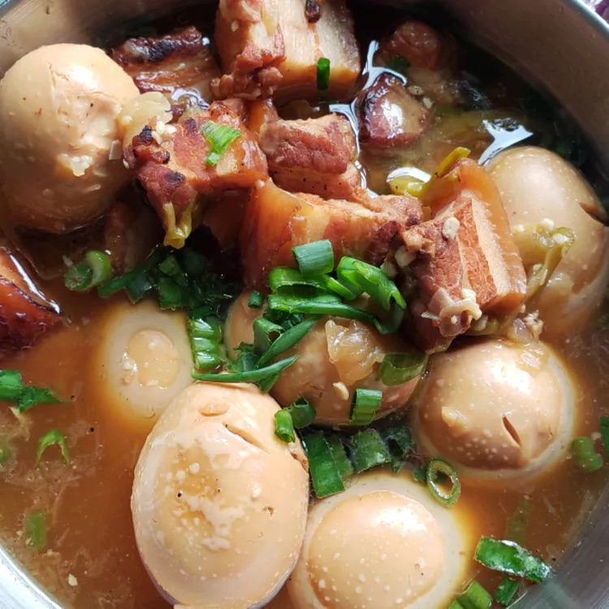

Thit Kho

Description
Thit Kho, a quintessential Vietnamese comfort food, is a savory and
aromatic dish featuring tender, caramelized pork belly simmered in a
luscious blend of coconut water, fish sauce, and sugar. This slow-cooked
delicacy achieves its signature rich and complex flavor from the
harmonious balance of sweet, salty, and umami elements, further enhanced
by the subtle infusion of garlic, shallots, and black pepper. Often
accompanied by hard-boiled eggs that absorb the flavorful braising liquid,
Thit Kho is traditionally served over a bed of steamed jasmine rice,
making it a hearty and satisfying meal that evokes the warmth and
familiarity of home-cooked Vietnamese cuisine.
Ingredients
- 2 pounds pork belly, trimmed
- 2 tablespoons white sugar
- 5 shallots, sliced
- 3 cloves garlic, chopped
- 3 tablespoons fish sauce
- ground black pepper to taste
- 13 fluid ounces coconut water
- 6 hard-boiled eggs, peeled
Steps
-
Slice pork belly into 1-inch pieces layered with skin, fat, and meat.
-
Heat sugar in a large wok or pot over medium heat until it melts and
caramelizes into a light brown syrup, about 5 minutes. Add pork and
increase the heat to high. Cook and stir to render some of the pork fat,
3 to 5 minutes.
-
Stir shallots and garlic into the wok. Add fish sauce and black pepper;
stir until pork is evenly coated. Pour in coconut water and bring to a
boil. Add hard-boiled eggs and reduce the heat to low. Cover and simmer,
checking occasionally and adding a little water if the liquid evaporates
too much, until pork is tender, about 1 hour.
-
Remove from the heat and let stand for about 10 minutes. Skim fat from
the surface of the dish.